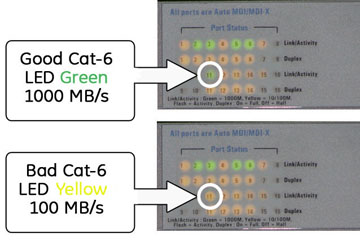
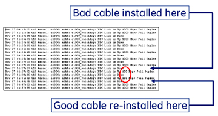
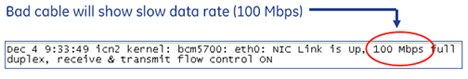

- 00000018WIA30065E20GYZ
- id_131061704.1
- Dec 7, 2022 4:18:35 PM
VRE Troubleshooting
Review the problems reported below and click on the corresponding link to access the troubleshooting flow charts.
-
Problem Reported: Image reconstruction is slow.
-
Problem Reported: TPS Reset does not complete.
-
Problem Reported: Image is not reconstructing; losing images or artifacts.
Refer to following troubleshooting guides for further assistance:
Overview
Issues with Cat-6 Cables
Problems can result from a defective Cat-6 cable in the Power Gradient RF (PGR) Cabinet. Symptoms can include:
-
TPS reset hang-up
-
Slow recon times
-
Loss of connectivity between the Host and PGR Cabinet
Two procedures are provided to troubleshoot cables between the Host or ICN and the Ethernet switch:
-
For the long network cable between the Host and Ethernet Switch (5160267-3), see Long Network Cable between Host and Ethernet Switch
-
For the short network cables between the ICN to the Ethernet switch (5146974 and 5146974-2), see Short Network Cables between ICN/VRE to Ethernet Switch
Long Network Cable between Host and Ethernet Switch
-
Check port activity for the green and orange LEDs located on the back of the Global Operator Console (GOC) for the Ethernet cable on the left. There are only two LEDs per port. For Cat-6, check the left LED to the port.
-
The orange LED signifies that there is good Host Ethernet activity with 1000 Mb/s (1Gb/s).
-
The green LED signifies that there is bad Host Ethernet activity with 100 Mb/s.
Figure 1. Host Ethernet Port Activity LED  Note:
Note:Ignore the Ethernet port on the right. This may be green or orange depending on hospital network settings.
-
-
Check the data rate per link/activity LED on front panel of the network switch by checking the link/activity LED for the port which is being tested. In , port 11 is being tested. Others may correctly be yellow.
-
The green LED signifies that there is good Host Ethernet activity with 1000 Mb/s (1Gb/s).
-
The yellow LED signifies that there is bad Host Ethernet activity with 100 Mb/s.
Figure 2. Network Switch Indicator LEDs - GOC 
-
-
Test the connection between the Host and switch.
-
Click C Shell to open a command window.
-
Type in the command window more /var/log/messages | grep “e1000: eth1: e1000_w” and press Enter.
-
Review log file for 100.
Figure 3. Eth-1 Data Rate Test 
-
Short Network Cables between ICN/VRE to Ethernet Switch
-
Test the connection between the Host and switch.
-
Click C Shell to open a command window and telnet the ICN.
-
Switch to the root login by typing su - and hit Enter.
Note:It is possible that the customer changed the default password. If you cannot log in, contact the customer for the correct password.
-
In the command window type more /var/log/messages | grep “NIC Link is U” and hit Enter.
-
Look for 100 Mbs in log file.
Figure 4. ICN/Ethernet Switch Log File 
-
-
Check the port activity LED for the port in question on the 16 Port Ethernet Switch. There are two LEDs per port. Check the left LED on the port. Either port can be used.
-
The green LED signifies that there is good Host Ethernet activity with 1000 Mb/s (1Gb/s).
-
The orange LED signifies that there is bad Host Ethernet activity with 100 Mb/s.
Figure 5. ICN Ethernet Port Activity LED 
-
-
Check the data rate per link/activity LED for appropriate port on front panel of network switch. See Figure 2 and Figure 5.
Image is not Reconstructing; Losing images or artifacts
Use the following troubleshooting tree to help determine the reason that an image is not recontructing properly or the system is losing images or artifacts. Boxes outlined in blue are linked to other modules. Click to access.

Image Reconstruction is Slow
Boxes outlined in blue are linked to other modules. Click to access.

TPS Reset Does Not Complete
Boxes outlined in blue are linked to other modules. Click to access.

ICN On/Off Procedure
-
Assuming that all the Ethernet connections on the ICNs and GOC are correctly wired, the ICNs switch ON automatically when the HP GOC is switched ON.
Note:The ICNs do not turn ON until the system reaches the login prompt.
-
Assuming that all the Ethernet connections on the ICNs and GOC are correctly wired, the ICNs switch OFF automatically when the HP computer is switched OFF in a orderly fashion via the software.
Figure 9. Front of the ICNs — Power On Light 
-
Turning OFF the HP computer by just switching OFF power to the HP computer or GOC does not shut down the ICN(s). Shut down the software running on the HP computer in an orderly manner to begin the shut down of the ICN(s).
-
The steady green light on the front of the ICNs indicates power ON . If the light is blinking, the ICN is OFF .
-
-
This is not the recommended solutions. Only perform this step if no other option is available.
If the HP GOC is locked up or dead, and you want to power off the ICNs, you can bring the ICNs down manually as follows:
-
A MOMENTARY press of the power button on the ICN brings the ICN OS down cleanly and shuts off power to the ICN. There is a delay of 30 seconds after pushing the power button before the shutdown begins. Wait for 3 minutes to see if the ICNs shut off after closing all of its files.
-
If after 3 minutes the ICN has not shut down, hold the power button down on the ICN until it powers down. This overrides the ICN OS and forces a shut down.
-
For more information, see ICN Power On/Off Procedure for 4100 and 4170.
-
ICN Connections
Each ICN must have three connections to the Ethernet switch. If viewed from the top, two connections are on the right hand side and one on the left. The left connection is to the diagnostics port. Through this port the Firmware gets loaded into the ICN.

ICN Software
During the loading of the ICN software, the FE is required to enter the number of ICNs that the system has. The system automatically detects the ICNs that are present and attempts to reconcile that number with the number entered by the FE. For example, in a two ICN system, the system displays 2 ICNs are loaded.
If the number of ICNs do not match, the FE must physically check the number the ICNs in the PGR cabinet.
-
If the system sees more ICNs than the number entered by the FE, turn OFF the CAM Chassis, load the OS, and switch the CAM Chassis to ON. The number of ICNs will match and the FE can continue with the software load.
-
If the system sees fewer ICNs than the number entered by the FE, check the power to each ICN. Examine all the IPMI cables to each ICN (leftmost Ethernet connection when you are facing the back of the ICN). Confirm that each cable is securely seated at both ends.
If the cables are securely seated and the system still doesn’t recognize the ICN, try swapping Ethernet cables or try another port on the Ethernet switch before checking for a defective ICN.
After the ICN OS is loaded, a connection error is reported from the Infiniband board. This is a normal message and the FE is prompted to acknowledge the message.
The green LED on the ICN will continue to blink until the TPS reset is complete.
If the CAM Chassis has problems during the boot up of hardware or software, the system issues a host communication time out error. The error message will not specify a specific CAM issue.
First, ping the APS, AGP, SCP, and the term server. If all the pings are successful, run mgd_term to watch boot erros as the CAM Chassis recycles..
If the ICNs are still not recognized AND the green LED is OFF, note the MAC address of the ICN without the LED ON and switch it OFF. For more information, see ICN Power On/Off Procedure for 4100 and 4170.
If the ICN needs to be replaced, see ICN Replacements .
Power Failure
In the event of a power outage, go through the normal power up procedure from the GOC. If the ICN does not power on, reload the ICN OS using the normal procedure from the Service Desktop.
IP Address Changes and VRE ICN Reconfiguration
During new installations and upgrades, ensure that the system IP addresses are current (both Host IP and CAM IP). If any changes have been have been made to one of the IP addresses, run the procedures in Configuring the ICN - VRE.
Other issues that can occur:
-
During application startup, an ICN may not successfully initiate and TPS Reset failures will occur if the ICN has not been reconfigured since the last IP address change.
-
Changing the host IP address or the CAM IP address without performing the Configuring the ICN - VRE procedure leaves the VRE configuration files with the old IP addresses.